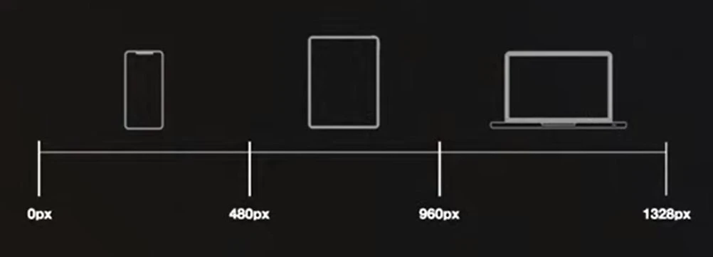
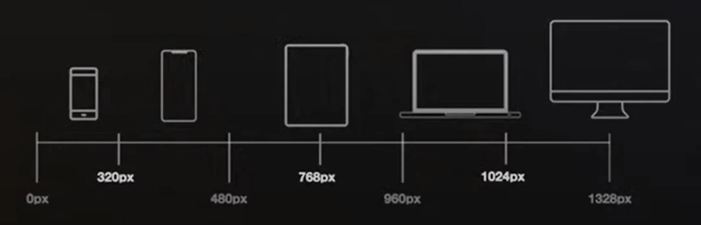

Responsive Design
Es los que hace que una pagina web se vea correctamente independientemente del dispositivo desde el que se visualiza.
Breakpoints
Es un momento donde la pagina web cambia. Deben servir como referencia para crear nuevos breakpoints según lo necesite.
Breakpoints de Resolución
Se tiene en cuenta el ancho de pixeles del dispositivo.
Básicos
Completos
Personalizados
Es cuando el diseño | maquetación de una pagina web se rompe en un pixel concreto.
Recomendaciones:
- Revisar Google Analytics de la web, para saber que dispositivos usan más al visitar la pagina
- Revisar Stat Counter, pagina que te indica los dispositivos más usados de determinado país.
Breakpoints de Dispositivo
Se tiene en cuenta el comportamiento del propio dispositivo.
- Orientación
- Modo Oscuro
- Pantalla de impresión (No se usa)
¿Dónde se usan?
Los breakpoints se usan en dos lugares:
- HTML: en el atributo media=""
- CSS: en la regla @media